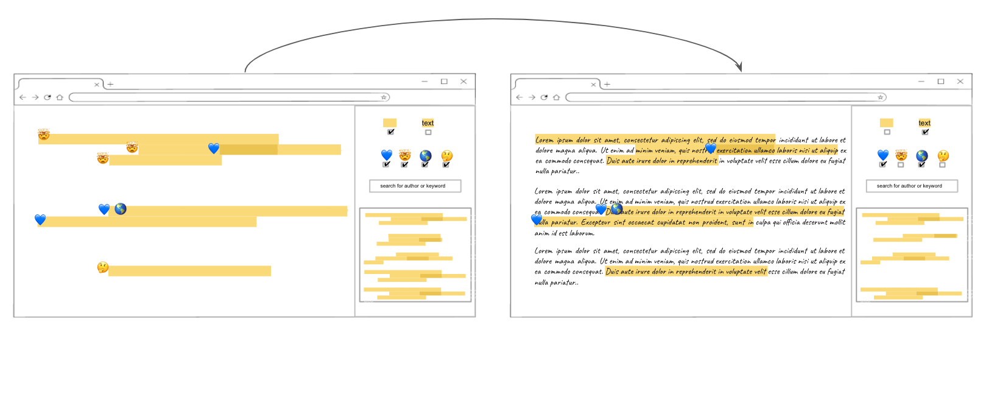

DOCUMAP DESIGN JOURNEY
week 1
generating and sketching ideas
Idea1: the highlight map view
view the document as highlights without text and maybe show emoji on the side

Idea2: read the document through annotations
view the document as the annotations from others instead of the actual text

Idea3: the emoji map
view the document with a map of emojis on top to show interesting or confusing areas areas

Design Iteration
In this iteration we show filters, buttons and a search bar to personalize the reading experience (emoji, username, keyword). We also show a small map of the entire document the reflects the changes without the need to scroll down.
